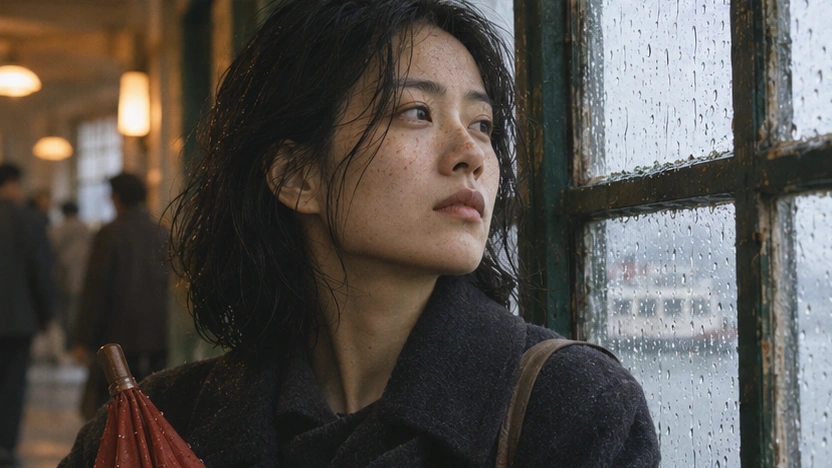

演示静帧《潮声到站》 ↗
演示静帧《潮声到站》 ↗
制作流程
把一场戏拆成镜头。
逐步确认剧本、资产和画面。需要连续制作时，先选定模型、费用来源和本次生成范围。

《潮声到站》演示静帧分镜演示
《潮声到站》
末班渡船即将开航，她带着一把红伞来到渡口。沿着下方四个镜头看同一场戏如何推进。
用于说明镜头组织的演示静帧
产品实屏
逐镜审看，确认后再继续。
沿着片段时间轴回看画面，在 A/B 候选中核对差异，确认当前选用的版本。
心语 AI · 逐段审片，界面使用演示数据
使用说明
开始制作前
个人版需要注册账号吗？
心语 AI 个人版在本机运行，日常使用无需注册或登录心语 AI 账号。
图片和视频生成如何计费？
在心语 AI 中配置自己的模型连接。实际生成费用由所使用的服务决定，发起制作时确认模型、费用来源和调用范围。
能合成一条完整视频吗？
确认各个片段且满足本机编码条件后，可以合成完整 MP4，并随成片带上可用音轨和字幕。